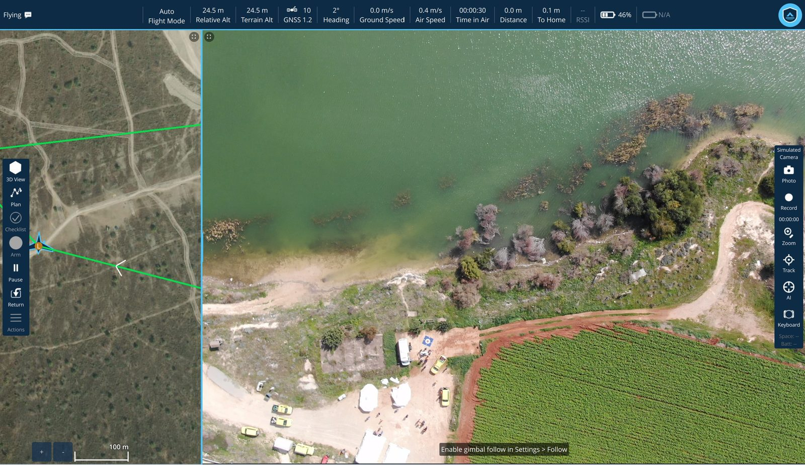
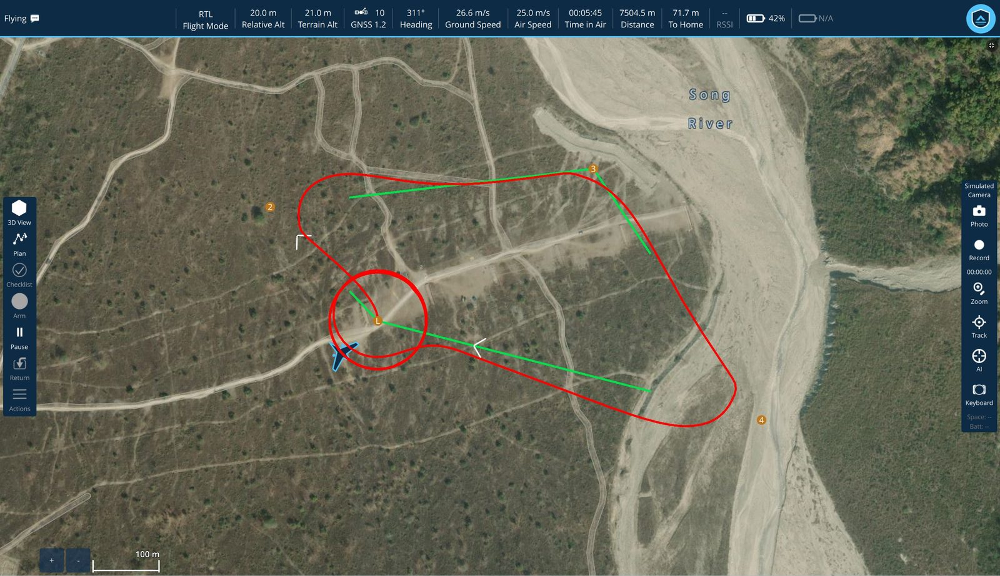
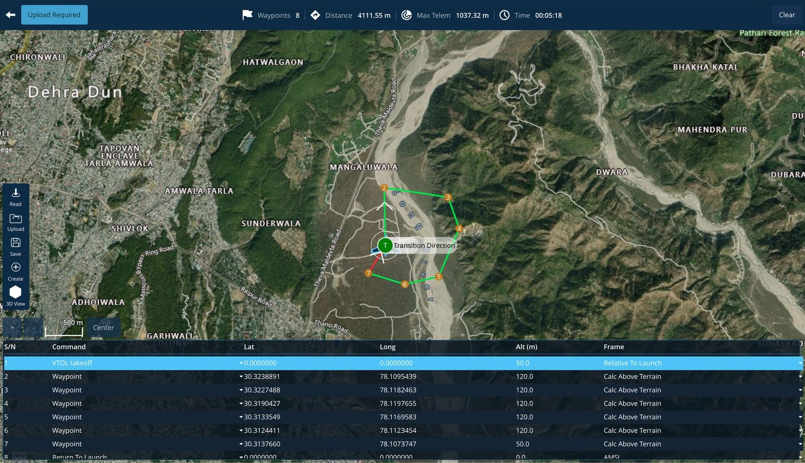
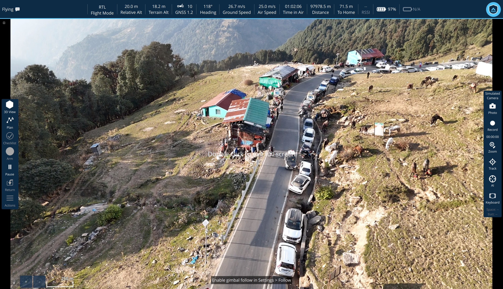
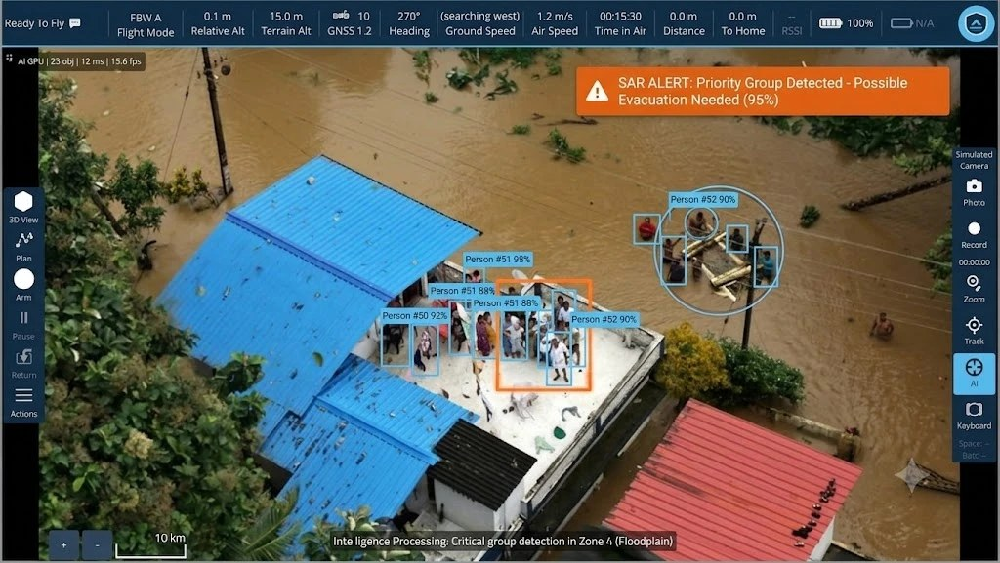
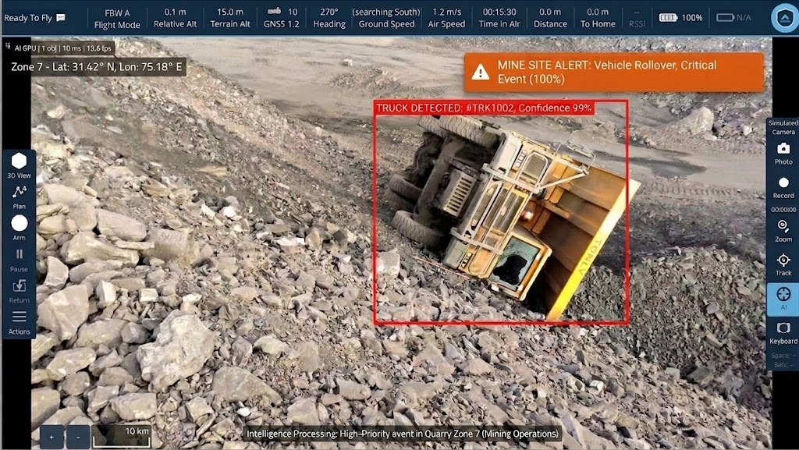

02 — The ground station
Controls sit where you expect them, the video carries nothing you did not ask for, and the planner checks the route against the ground before the aircraft ever leaves it.


Fly View — split map and live feed.

Plan View — mission and editable item table.
3D View — recorded in the station, plan reviewed against real terrain.

Video window — the feed, and nothing else.


Two real incidents — a flood rescue, a quarry rollover — read and raised automatically.
Everything in the station
A ground station is judged on the bad days — a sensor that will not calibrate, a link that drops, a log that has to come off the aircraft after an incident.